Overall Live GUI Layout
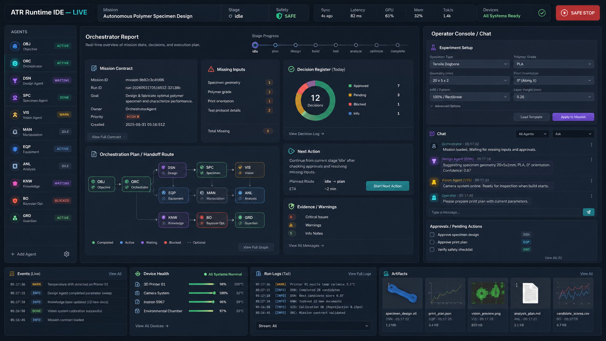
Sections: top_mission_bar, agent_rail, orchestrator_report, operator_console_chat, bottom_dock...
분리된 reference images, component crops, tokens, component specs, screen specs, schemas, prompts, implementation guides를 포함한다.

Sections: top_mission_bar, agent_rail, orchestrator_report, operator_console_chat, bottom_dock...
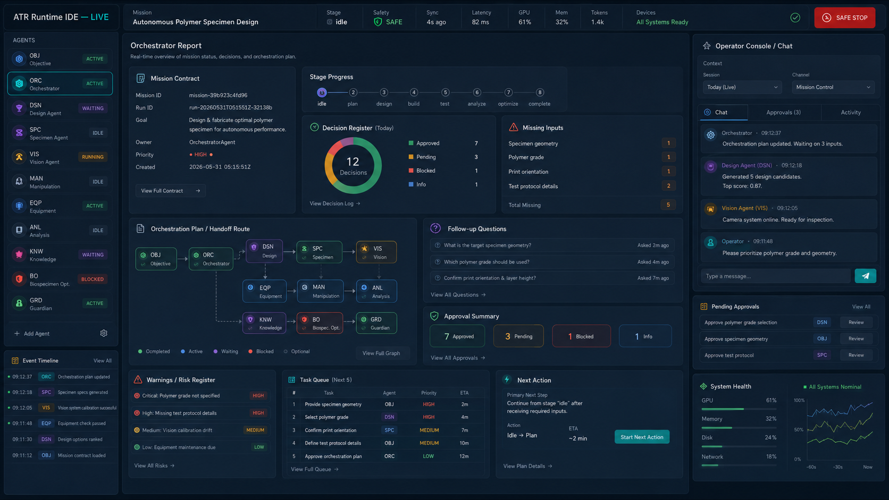
Sections: mission_contract, route_state, missing_inputs, decision_register, followup_questions...
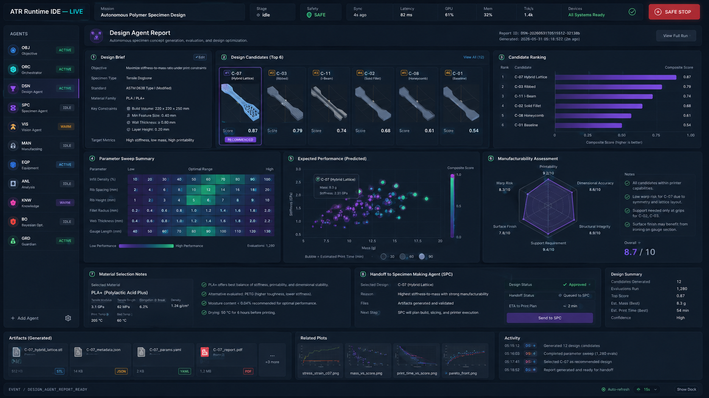
Sections: design_brief, candidate_board, candidate_ranking, parameter_sweep, expected_performance...
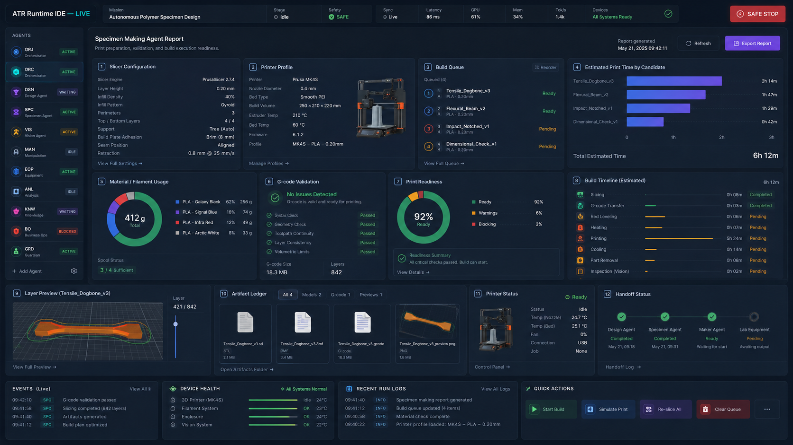
Sections: slicer_configuration, printer_profile, build_queue, estimated_print_time, filament_usage...
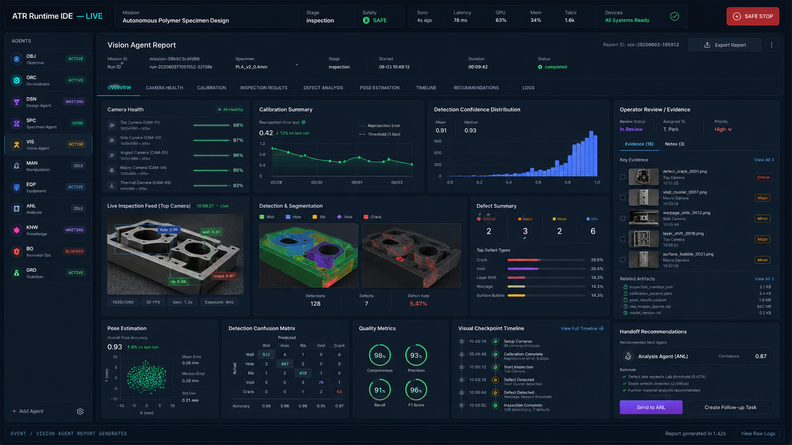
Sections: camera_health, calibration_summary, confidence_distribution, inspection_feed, segmentation...
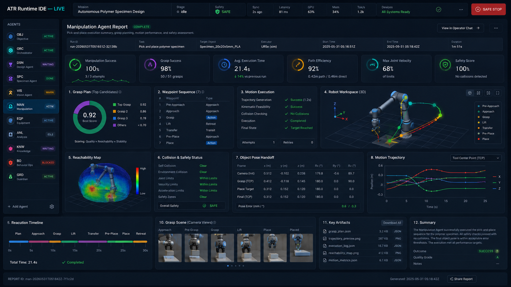
Sections: success_metrics, grasp_plan, waypoint_sequence, motion_execution, robot_workspace...
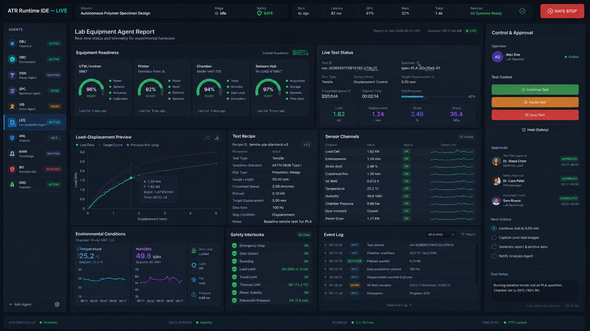
Sections: equipment_readiness, live_test_status, load_displacement_preview, test_recipe, sensor_channels...
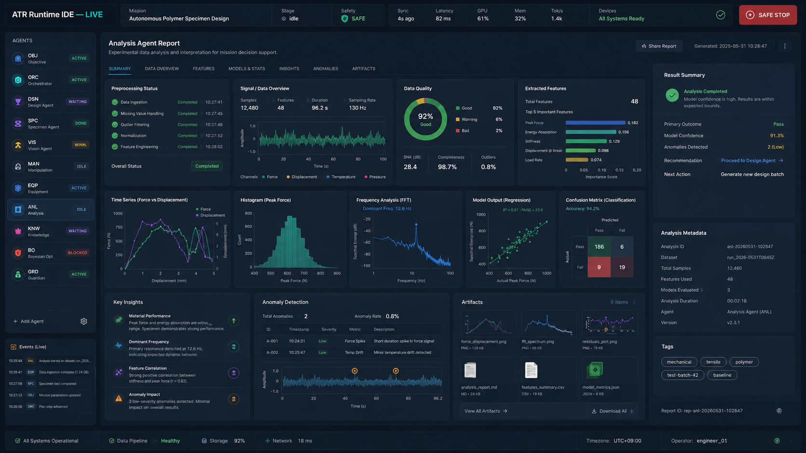
Sections: preprocessing_status, signal_overview, data_quality, extracted_features, time_series...
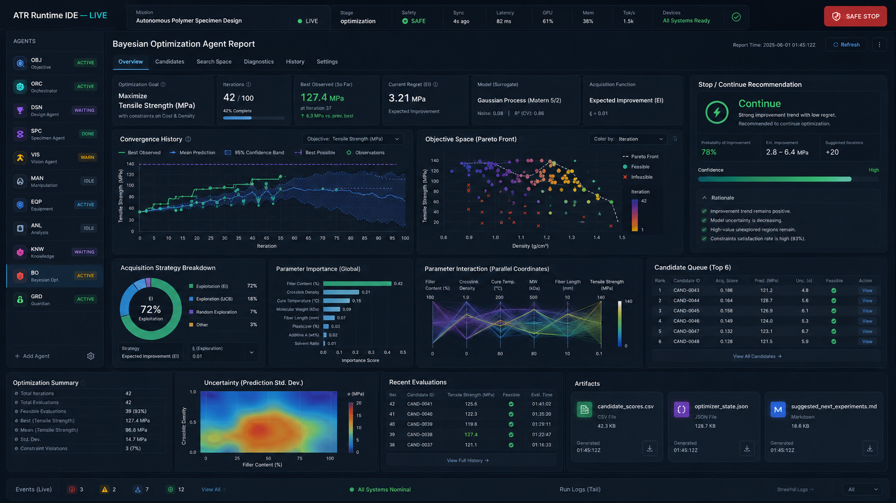
Sections: optimization_goal, iterations, best_observed, current_regret, surrogate_model...
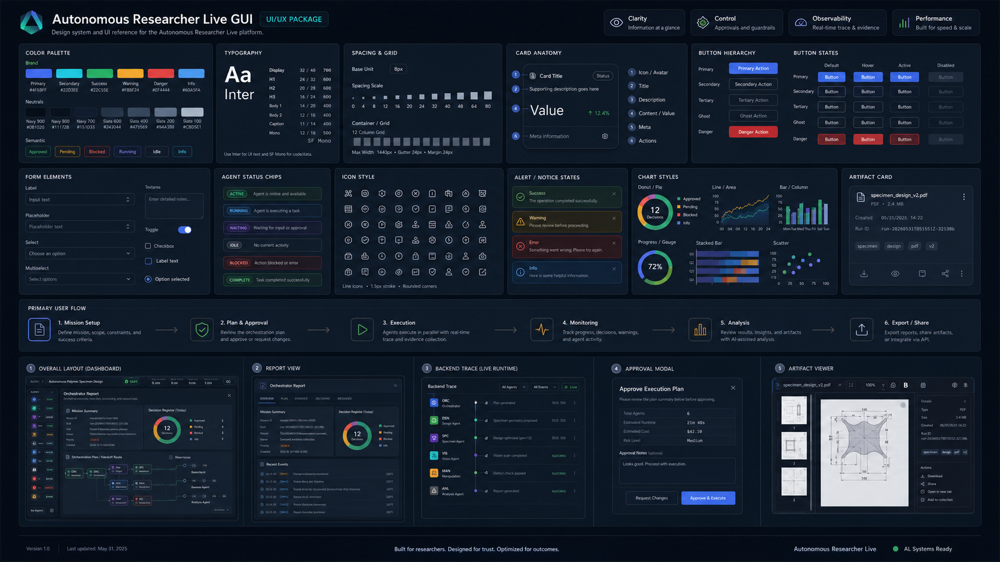
Sections: color_palette, typography, spacing_grid, card_anatomy, buttons...
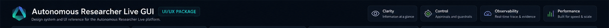
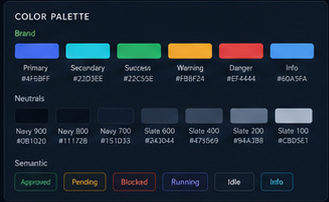
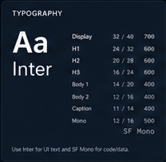
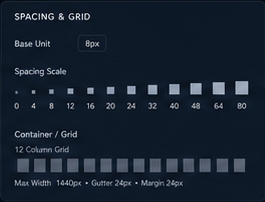
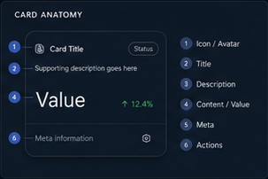
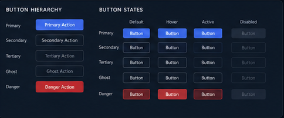
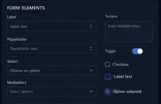
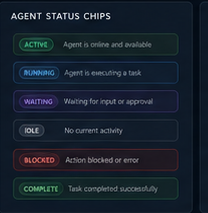
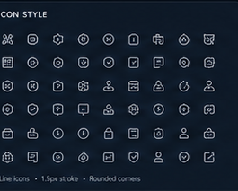
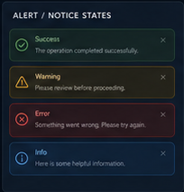
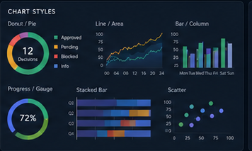
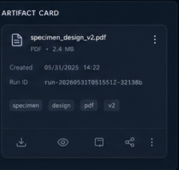
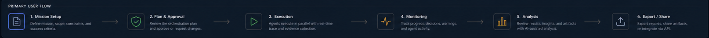
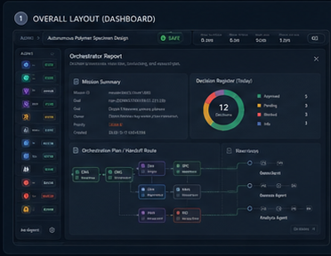
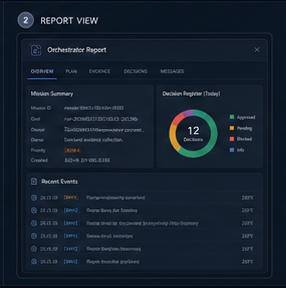
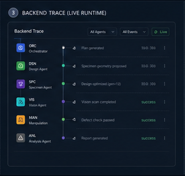
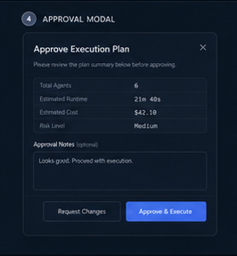
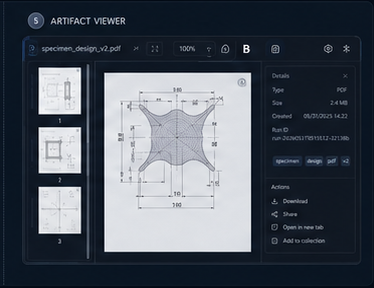
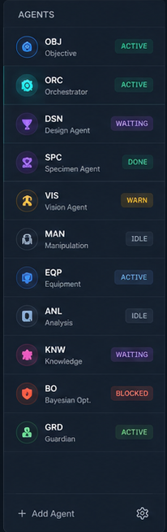
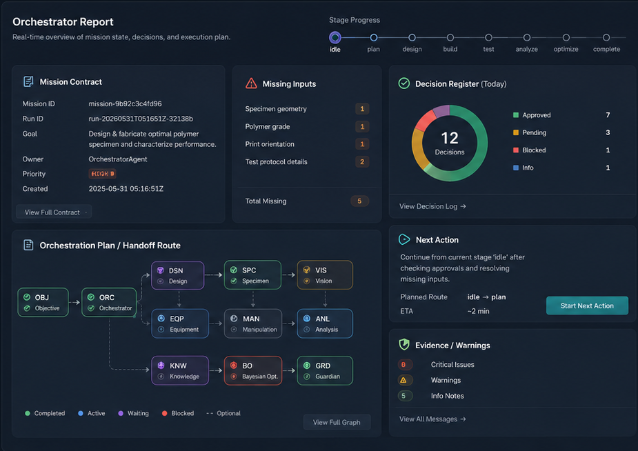
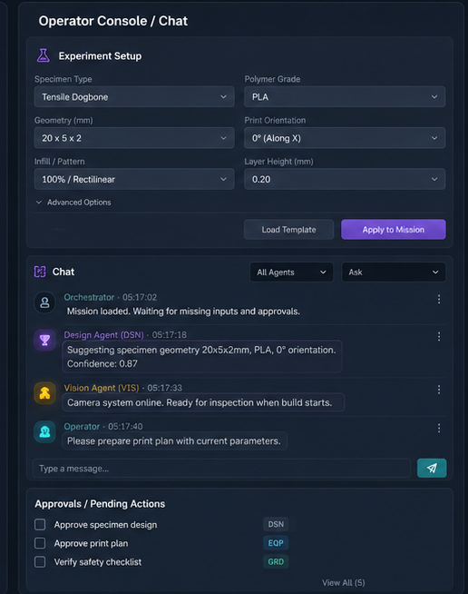
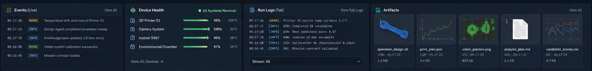
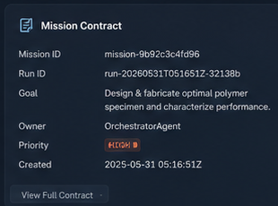
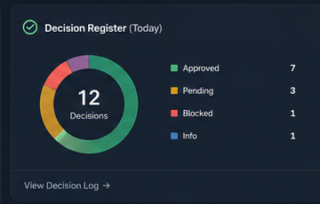
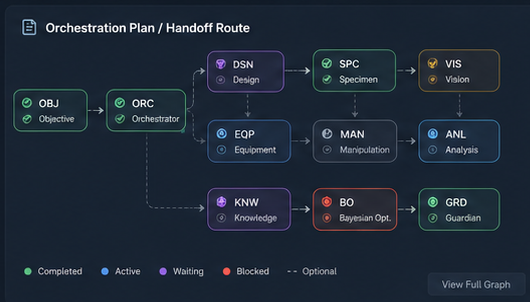
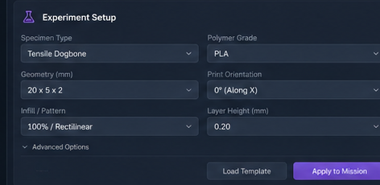
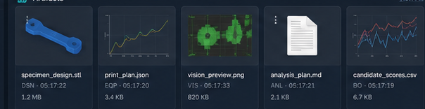